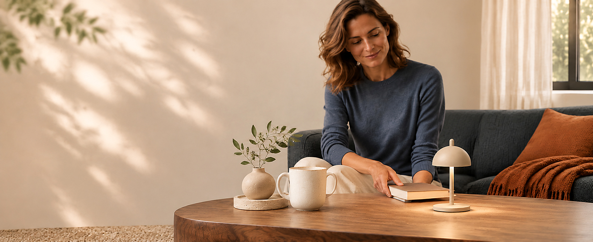
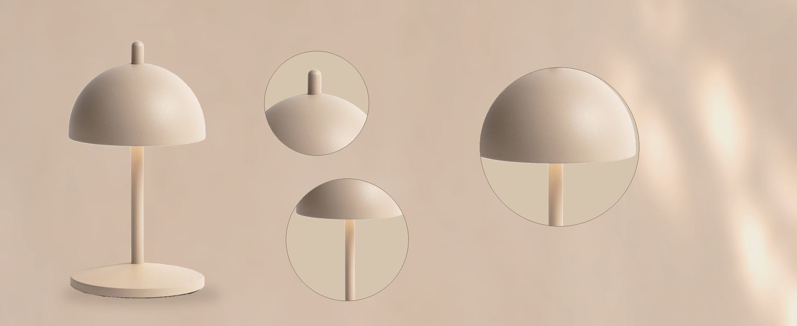
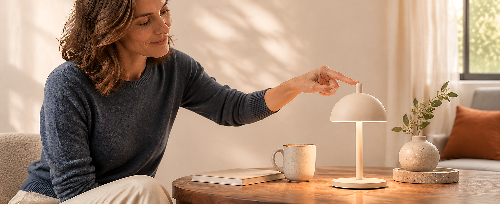
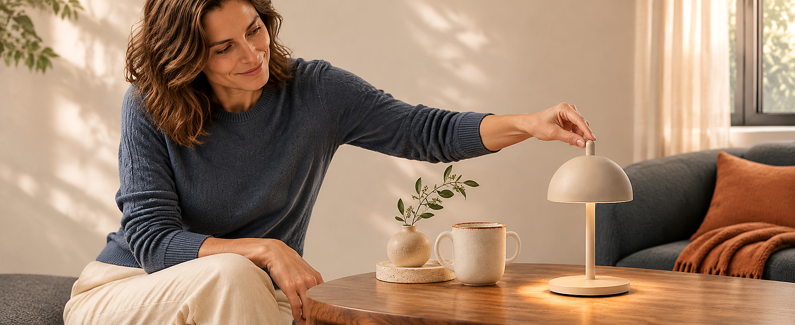
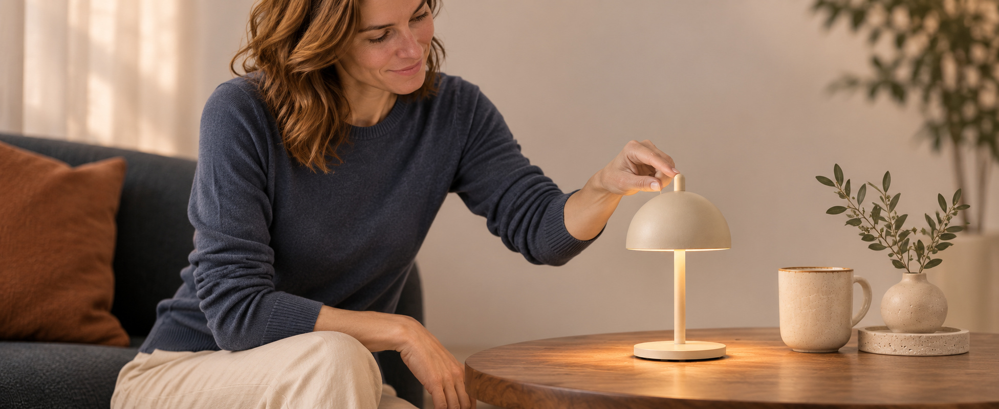
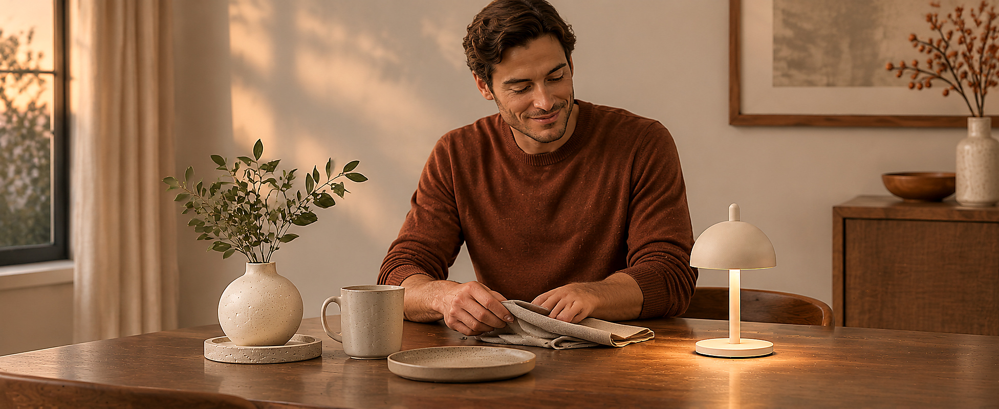
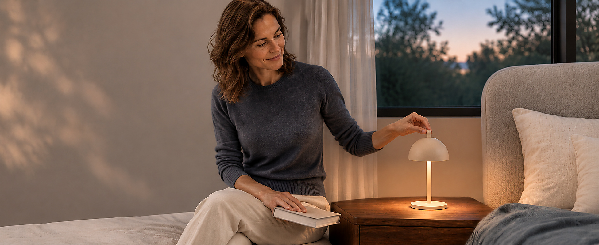
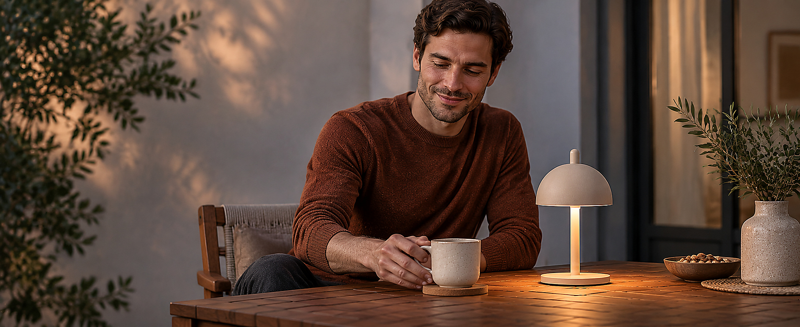
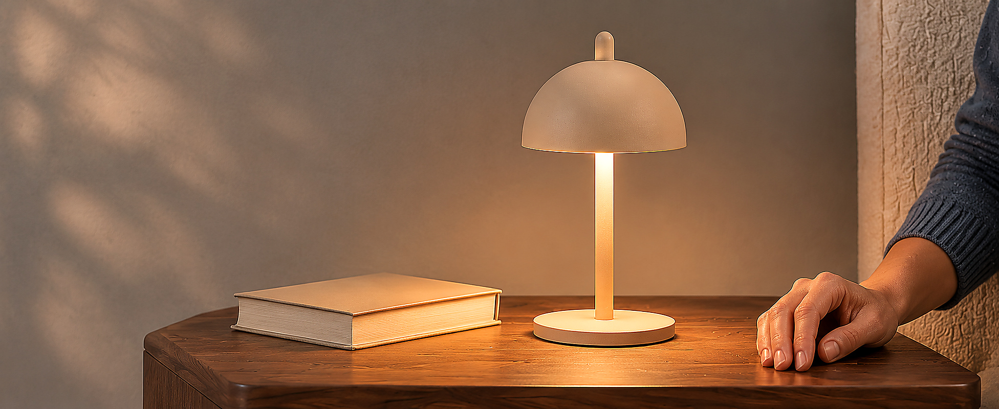

P01 · PREMIUM_FULL_BACKGROUND_IMAGE · 原生字段流向示意
A small light for everyday moments.

A compact, cordless lamp for adjustable ambient light at home.
P02 · PREMIUM_HOTSPOT_IMAGE · 原生字段流向示意

Top knob
One top knob controls power, brightness and color temperature.
Sand Cashmere
A soft sand-colored finish on the powder-coated aluminum body.
Dome profile
A domed shade, slender stem and round base.
P03 · PREMIUM_IMAGE_CAROUSEL · 原生字段流向示意
Press. A simple start.

Press the top knob to switch on or off.
Turn. Find your glow.

Turn the knob to dim from 5% to 100%.
Press & turn. Warm to neutral.

Adjust color temperature continuously from 2700K to 4000K.
P04 · PREMIUM_NAVIGATION_CAROUSEL · 原生字段流向示意
A little light at the table.

Bring a little ambiance to the table.
A quiet bedside glow.

Up to 8 hours on a full charge. Runtime varies with brightness.
Outdoor moments.

IP65-rated. Bring indoors after outdoor use.
P05 · PREMIUM_FULL_BACKGROUND_IMAGE · 原生字段流向示意
Small lamp. Thoughtful form.

Approx. 7.9 in high × 4.3 in in diameter (20.1 × 11 cm).
A little more to know.
How do I adjust the light?
Press the knob for power, turn to dim, and press and turn to change color temperature.
How long does it last on a charge?
Up to 8 hours on a full charge, depending on brightness. NED lists a charging time of approximately 6 hours.
Can I use it outdoors?
NED lists an IP65 rating and recommends bringing the lamp indoors after outdoor use.